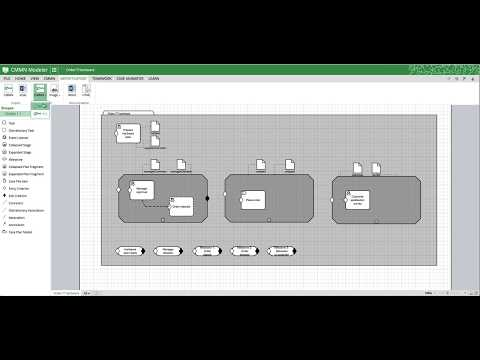
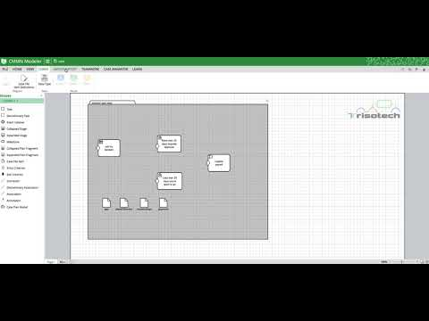

jBPM 7.8 native execution of BPMN2, DMN 1.1 and CMMN 1.1
with upcoming 7.8 release of jBPM there is quite nice thing to announce – native execution of:
- BPMN2 – was there already for many years
- DMN 1.1 – from the early days of version 7
- CMMN 1.1 – comes with version 7.8
The biggest thing coming with 7.8 is actually CMMN execution. It is mainly added for completeness of the execution so people who would like to model case with CMMN can actually execute that directly on jBPM (via KIE Server or embedded).
Although jBPM supports now CMMN, it is still recommended to use BPMN2 and case management features of jBPM for advanced cases to benefit from features that both specification brings rather to be limited to particular approach. Nevertheless CMMN can be a good visualisation for less complex cases where data and loosely coupled activities can build a good business view.
Disclaimer: jBPM currently does not provide nor plans to provide any modelling capabilities for CMMN.
With that said let’s take a quick look at what is supported from the CMMN specification as obviously it’s not covering 100% of the spec.
- tasks (human task, process task, decision task, case task)
- discretionary tasks (same as above)
- stages
- milestones
- case file items
- sentries (both entry and exit)
Not all attributes of tasks are supported – required, repeat and manual activation are currently not supported. Although most of the behaviour can still be achieved using different constructs.
Sentries for individual tasks are limited to entry criteria while entry and exit are supported for stages and milestones.
Decision task by default maps to DMN decision although ruleflow group based is also possible with simplified syntax – decisionRef should be set to ruleflow-group attribute.
Event listeners are not supported as they do not bring much value for execution and instead CaseEventListener support in jBPM should be used as substitute.
Let’s have a quick look at how the sample Order IT case would look like designed in CMMN
some might say it’s less or more readable and frankly speaking it’s just a matter of preferences.
Here is a screencast showing this CMMN model being executed

Next I’d like to show the true power of jBPM – execution of all three types of models:
- CMMN for top level case definition
- DMN for decision service
- BPMN2 for process execution
you can add all of them into kjar (via import asset in workbench) build, deploy from workbench directly to KIE Server and execute. So here are our assets
A case definition that has:
- decision task that invokes DMN decision that calculates vacation days (Total Vacation Days)
- two human tasks that are triggered based on the data (entry criterion)
- process task that invokes BPMN2 process if the entry condition is met
Here is our DMN model
and last but not least is the BPMN2 process (actually the most simple one but still a valid process)
Another thing to mention is that, all the models where done with Tristotech Editors to illustrate that they can be simply created with another tool and imported into kjar for execution.
Here is another screencast showing this all step by step, from exporting from Tristotech, importing into workbench, building and deploying kjar and lastly execute on KIE Server.

That’s all to share for now, 7.8 is just around the corner so keep your eyes open and visit jbpm.org to learn more.
And at the end here are the links to the projects (kjars) in github
Enjoy!

{kind=link}
{kind=link}
{kind=link}
{kind=link}